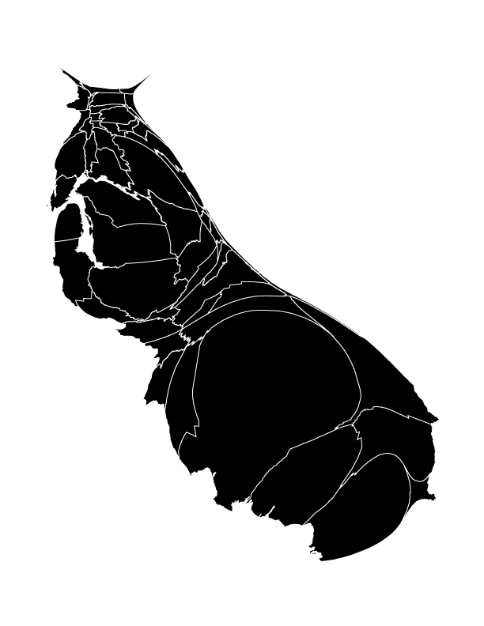

My Master’s thesis research explored the unlikely second wave of rapid transit planning that occurred at mid-century in the United States. One of those plans, from 1956, proposed a massive rapid transit system for the nine counties of the Bay Area. This transit diagram imagines what the Bay Area Rapid Transit system might have looked like had that vision ever come to fruition. Of course, the chances of this system being built were less than slim. But the response to the various versions of this map on blogs including Ten Times One, Laughing Squid, Muni Diaries, and Mission Mission make it clear that the dream, for some of us, is a tantalizing one. My thanks to Adam Mann for including my map in a gallery of fantasy transit maps on Wired Science's Map Lab. It appears fantasy transit maps have truly arrived as a curious and (I like to think) thought-provoking sub-genre.
Indeed, the dream of a Bay Area-wide integrated rapid transit system is somehow so compelling that I've returned to it repeatedly over the years. The version above is actually the fourth (!) version. I was spending a lot of time looking at Massimo Vignelli's wonderful 1970 map of the New York Subway system as well as the exquisite work of Cameron Booth while developing this latest version. In addition, I wanted to boost the fantasy quotient by integrating the beleaguered and (seemingly) destined-to-fail California High Speed Rail alignment. This most-recent version appears in Counterpoints: A San Francisco Bay Area Atlas of Displacement & Resistance, produced by the Anti-Eviction Mapping Project and published by PM Press.
I've included the previous versions below. By scrolling down the page, you'll travel back in time, and witness both how my concept for the fantastic system changed over time, but also how my cartographic design skills have evolved over time.
2013
Edits and revisions in the 2013 version included the adoption of stop symbols like those found on the London Underground diagram, which allowed me to place the stop labels more clearly. Also, this version integrated the Transbay Terminal as an important transfer station. Some stops have been renamed and typographical errors corrected. Perhaps most obviously, I removed the BART logo and any mention of BART or its website, replacing it with a more explicit reference to the planning document that inspired the map, Regional Rapid Transit, published in 1956.
2011
This is the earliest diagrammatic version, and the one that's probably be seen by the most people over the years.
2010
My earliest attempt adhered to a conventional map framework. The modern New York subway map served as an inspiration.
View the interactive version here, which uses Leaflet.js and Illustrator artwork adapted to GeoJSON using MAPublisher.
A cartogram is a thematic map that is "drawn so that the areas of internal enumeration units are proportional to the data they represent"1. As a result, cartograms are uniquely suited to enable immediate visual comparisons of quantities, and coupled with static multiples in a temporal series, can enable comparisons across time. This cartogram series uses the county as the enumeration unit, and resizes each county relative to the other to show population patterns across the state of California. At a glance it should be clear that population is not evenly distributed across the state. Perhaps more striking is the temporal dimension to California's extraordinary population growth since 1900.
The sizing of the county polygons remains consistent throughout the visualization, for example allowing the magnitude of San Francisco's population in 1900 to be compared to the Sacramento's 1980 population.
This is a semi-contiguous cartogram. Due to the fact that some counties with large land areas have very small populations (for example, Inyo County), and some counties with small land areas have large populations (San Francisco), with a wide range of population densities in between, some shearing is inevitable as the counties are resized according to population.
I start with a table of all county populations by census year. I add columns to the table where I divide each population by 10,000 and round to the nearest integer. This gives me the number of 0.1 x 0.1 inch squares that I will use to build each county. For example, in 1980 Calaveras County had 20,710 inhabitants, so that county's shape will be built out of 2 squares, and in that same year Fresno County had 514,621, for a total of 51 squares. In limited cases, I draw squares and rectangles that are smaller than 0.1 x 0.1 in. In 1900, Inyo County had 4,377 inhabitants, and my table produces a result of 0 squares. Rather than round up to 1 square, I create a square that is 0.05 x 0.1 in, or roughly 5,000 persons according to my scale.
I set up the document's grid for 0.1 inch increments, enable it, and then select Snap to Grid. I build larger counties out of smaller groups of "blocks", almost Tetris-style, so I can shape and fit the counties to match, as much as possible, their original shapes and the topological relationships amongst the various counties (for example, Santa Barbara County is vaguely rectangular, shares its eastern border with Ventura County, its northern border with San Luis Obispo County, and its northeastern corner meets the southwestern corner of Kern County). I refer to a normal map of California counties continuously during this phase. It's impossible not to incur some shearing and discontinuity in the process. Mono County, with its 1980 population of 8,577, would be stretched so thin as to be rendered practically invisible. I discuss a contemporary alternative of cartogram production and why I've opted for this "counting squares" method as an addendum below.
In the last decade, the Cartogram Geoprocessing tool, created by Tom Gross and available for ArcGIS Desktop, has automated the cartogram creation process. It makes use of a method first published by physicists/computational scientists Michael T. Gastner and M.E.J. Newman in 2004, the "diffusion-based method for producing density-equalizing maps"2, which adapts algorithms developed in the materials sciences to warp the size of shapes while maintaining topological relationships. Kenneth Field has noted that their breakthrough represents "the holy grail" in cartogram production, solving many of the problems of topology and continuity that hindered earlier efforts.3 The result are maps with a distinct aesthetic akin to inflated and deflated balloons, or other decidedly organic analogies. A map I made using Gross's tool depicting California's population in 2000 makes the state look like a very well-fed slug. Interestingly, the "slug's antennae" of Del Norte and Modoc Counties, in the north of the state, also manifest themselves in a less organic way in my cartogram.
Of course, I am not making use of the affordances of Gross's tool in this cartogram series. Aside from the strange (if mathematically precise) aesthetic, I'm also interested in the idea of recovering data from the visualization; in other words, a user can visually compare the shapes to the simple legend and “recover” approximate values from the visualization. In this printed version, a user could even measure the dimensions of the polygons and arrive at population values rounded to multiples of 10,000. (Of course, the included table should dissuade anyone from doing so.) As graduated symbols, the relative sizes of squares are considerably easy for users to compare, even easier than graduated circles. My cartograms are built with the square as the atomic unit, bolstering the legibility of the quantities while simultaneously simplifying and abstracting the resulting shapes away from their original mapped appearance. It's a trade-off, but I happen to be a fan of the older, human-produced cartogram production methods, despite their topological limitations.
Population data was acquired from the US Census Bureau. Check out my readme on GitHub to learn more about how the interactive version was created, and information about one of my earliest grad-school projects—the first version of this visualization. This work marks the ten-year anniversary of that work, reimagining and redesigning it along the way.
In the months leading up to the 2016 meeting of the North American Cartographic Information Society (NACIS) in Colorado Springs, I was honored with my first invitation to participate in the annual Cartoquilt, a more recent NACIS tradition. It involves taking a map of the place where the meeting is being held, dividing that map into a "quilt" of squares or rectangles, and assigning each section to a different cartographer. Many NACIS luminaries have participated in years past, so I was pretty excited to contribute.
The section chosen for me happened to include the northern edge of NORAD, the North American Aerospace Defense Command, established in the mid-20th century. This led me to think about post-war suburbanization in the United States generally, and how Cold War efforts may have shaped local development in Colorado Springs in particular. I acquired historic USGS topographic maps for the area and used these to portray the expansion of Colorado Springs to the south and west, towards the foothills of the Rockies. I chose Optima, a safe, middle-road, and probably overused typeface designed in 1950 by Hermann Zapf, for its potential visual association with post-war municipal plans and reports.
In 2017, I received an invitation for another go-around with the NACIS Cartoquilt. This time we held our meeting in Montréal, so this was a fun way to learn more about the city's geography.
He Who Laughs Last is a Cthulhu Dark RPG Scenario written and quite successfully Kickstarted by Dave Sokolowski. (Cthulhu Dark scenarios delve into modern horror themes, inspired by the work of H.P. Lovecraft.) This project started as a map-design project, but quickly became a book design project, which is awesome, as I enjoy designing books when I get the opportunity. (See also my work on the 2013 CESTA Anthology.)
This is cartography developed specifically to contribute to themes of suspense, horrors revealed, and a potential apocalypse in the making. So, pretty different from what I typically do, but terrifically fun.